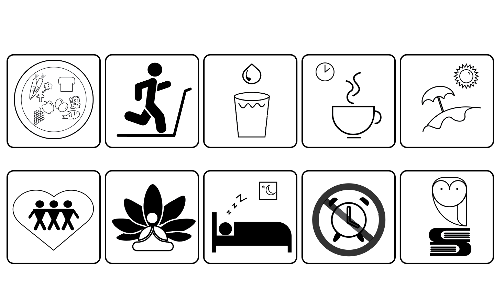
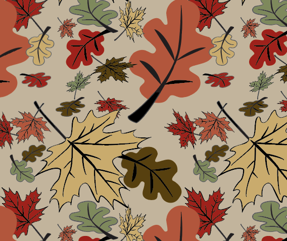
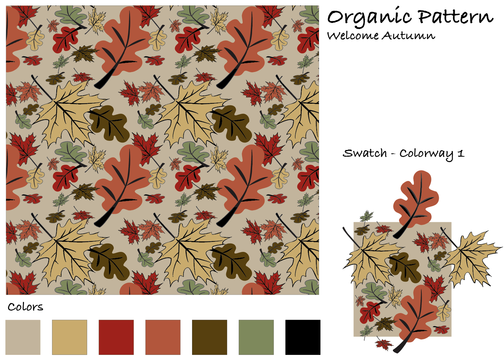
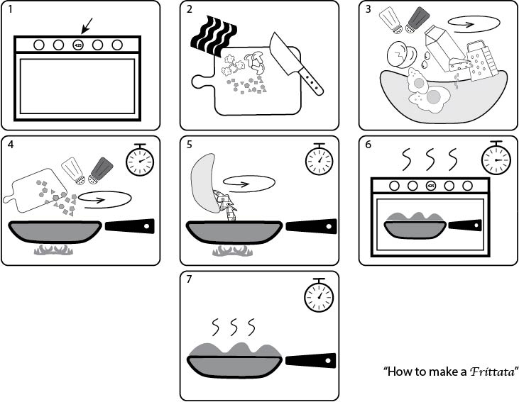

Wellness Placards
Demonstration of Universal Symbols used for a Wellnes Center theme, using Adobe Illustrator. These signs communicate the key wellness messages without words, which makes them universally understood.

Pattern Designs
Demonstration of pattern designs using Adobe Illustrator. Create a pattern tile by combining objects and layout in a creative manner. Group tiles to form patterns and apply different color palettes. Patterns applications for textiles including clothing and upholstery, as well as for vinyl appliques and more!


Illustrated Recipe
Demonstration of wordless instructional communication using images created on Adobe Illustrator. This is a recipe for how to make a frittata using only images.